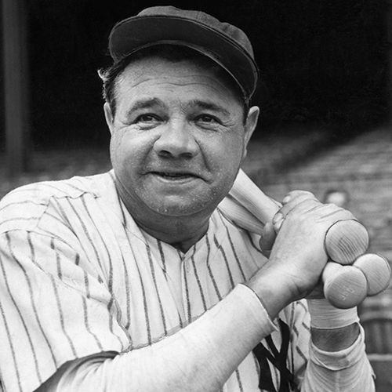
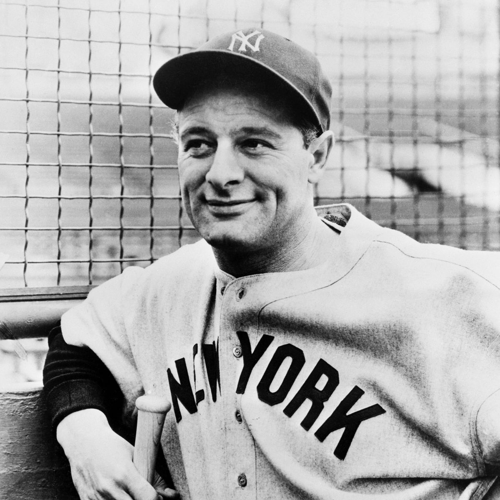
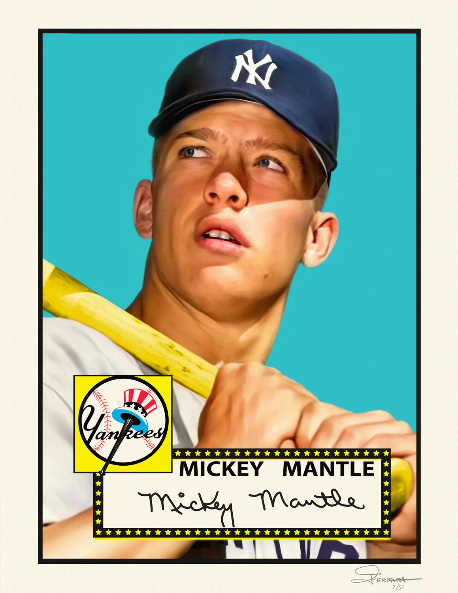
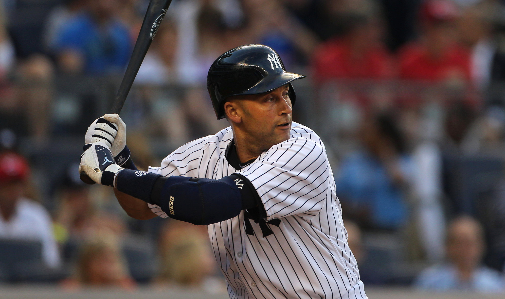

George Herman "Babe" Ruth (February 6, 1895 – August 16, 1948) was an American professional baseball player whose career in Major League Baseball (MLB) spanned 22 seasons, from 1914 through 1935. Nicknamed "the Bambino" and "the Sultan of Swat", he began his MLB career as a star left-handed pitcher for the Boston Red Sox, but achieved his greatest fame as a slugging outfielder for the New York Yankees. Ruth is regarded as one of the greatest sports heroes in American culture and is considered by many to be the greatest baseball player of all time. In 1936, Ruth was elected into the Baseball Hall of Fame as one of its "first five" inaugural members.
-
Henry Louis Gehrig (born Heinrich Ludwig Gehrig was born June 19, 1903 – June 2, 1941) was an American professional baseball first baseman who played 17 seasons in Major League Baseball (MLB) for the New York Yankees (1923–1939). Gehrig was renowned for his prowess as a hitter and for his durability, which earned him his nickname "the Iron Horse"
-
 Joseph Paul DiMaggio (/dɪˈmædʒioʊ/; born Giuseppe Paolo DiMaggio; November 25, 1914 – March 8, 1999), nicknamed "Joltin' Joe", "The Yankee Clipper" and "Joe D.", was an American baseball center fielder who played his entire 13-year career in Major League Baseball for the New York Yankees. Born to Italian immigrants in California, he is widely considered one of the greatest baseball players of all time and is best known for setting the record for the longest hitting streak in baseball (56 games from May 15 – July 16, 1941), which still stands.[1]
Joseph Paul DiMaggio (/dɪˈmædʒioʊ/; born Giuseppe Paolo DiMaggio; November 25, 1914 – March 8, 1999), nicknamed "Joltin' Joe", "The Yankee Clipper" and "Joe D.", was an American baseball center fielder who played his entire 13-year career in Major League Baseball for the New York Yankees. Born to Italian immigrants in California, he is widely considered one of the greatest baseball players of all time and is best known for setting the record for the longest hitting streak in baseball (56 games from May 15 – July 16, 1941), which still stands.[1] -
Mickey Charles Mantle (October 20, 1931 – August 13, 1995), nicknamed "the Commerce Comet" and "the Mick", was an American professional baseball player. Mantle played his entire Major League Baseball (MLB) career (1951–1968) with the New York Yankees as a center fielder, right fielder, and first baseman. Mantle was one of the best players and sluggers of all time, and is regarded by many as the greatest switch hitter in baseball history.
-
Derek Sanderson Jeter was born on June 26, 1974) is an American former professional baseball shortstop, businessman, and baseball executive. As a player, Jeter spent his entire 20-year Major League Baseball (MLB) career with the New York Yankees. He was elected to the Baseball Hall of Fame in his first year of eligibility in 2020; he received 396 of 397 possible votes (99.75%), the second-highest percentage in MLB history (behind only teammate Mariano Rivera) and the highest by a position player. He was the chief executive officer (CEO) and part owner of the league's Miami Marlins from September 2017 to February 2022.
.webp)
| Number | person | stats |
|---|---|---|
| 3 | Babe Ruth | Babe Ruth stats |
| 4 | Lou Gehrig | Lou Gehrig stats Profile |
| 5 | Joe Dimaggio | |
| 7 | Mickey Mantle | Mickey Mantle stats Profile |
| 2 | Derek Jeter | Derek Jeter stats Profile |
| 99 | Aaron Judge | Aaron Judge stats Profile |
| 8 | Yogi-Berra | Yogi-Berra stats Profile |
| 48 | Anthony Rizzo | Anthony Rizzo stats Profile |
| 44 | Reggie Jackson | Reggie Jackson stats Profile |